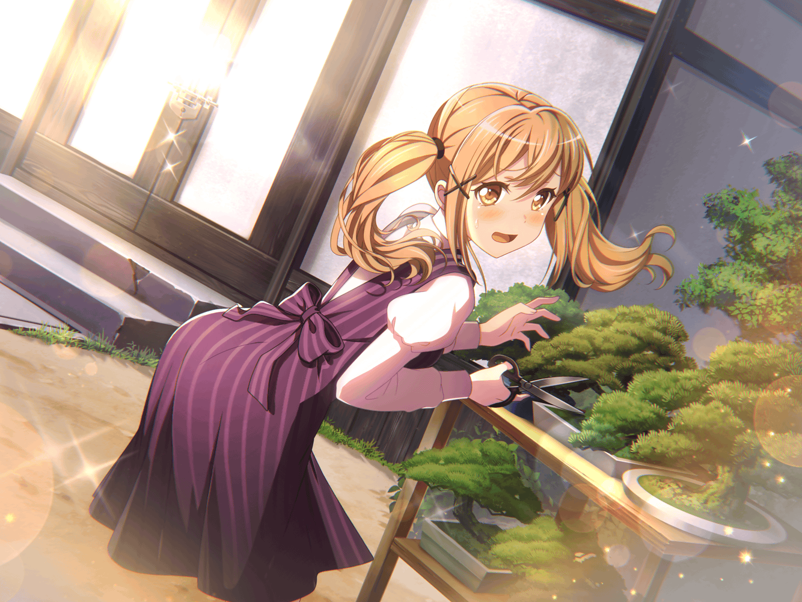
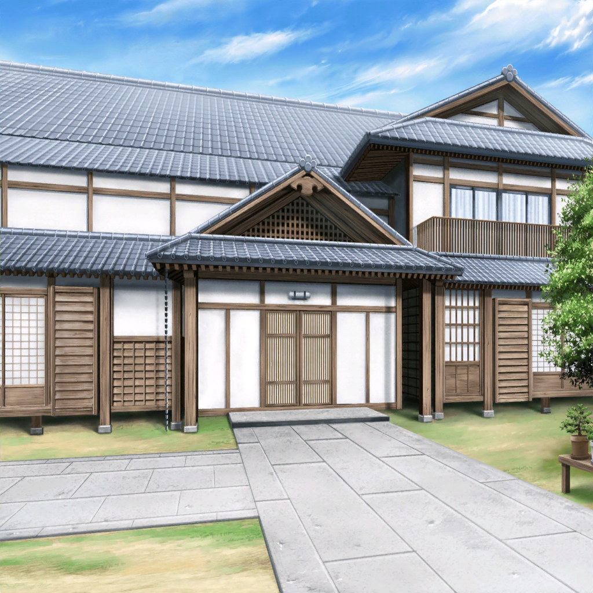

香澄
ふぅ～。ちょっときゅうけーい！
りみ
ずっと弾いてたから指痛くなっちゃったね。
香澄ちゃん大丈夫？
香澄
うんっ！ 私は全然へーき！
有咲は……
香澄
あれっ！？
有咲どこいったの！？
りみ
えっ！？
さっきまでそこで休んでたけど……
りみ
いないね……。
どうしたんだろ
りみ
お部屋戻ったのかな……？
香澄
うーん？ りみりん、探しにいこー！
りみ
い、いいけど休憩しなくても大丈夫なの～？

有咲
よしよし、今日もおまえたちは可愛いなぁ～
有咲
ん？ お前はちょっと元気がないな……？
最近寒かったからな……。ちょっと場所移動するか……
香澄
あー！ 有咲いたいたー！
有咲
……っ！！
有咲
香澄……っ！
い、今の見てたか……？
香澄
なにを？
有咲
なんでもねぇ！
香澄
今日もタマガワかわいいねーって
お話してたの？
有咲
やっぱり見てたんじゃねぇか！
忘れろっ！
りみ
タマガワって、この盆栽のこと？
香澄
うん！
有咲が毎日かわいいねー元気に育ってねーって言ってる
有咲
言ってねえ！
香澄
言ってないの？
有咲
い、言ってない……こともない……
香澄
有咲むずかしいなー！
有咲
うるせー。
ほらもういいだろ。蔵戻るぞ
香澄
えー！ もうちょっとタマガワ見たいよー！
りみ
私も、盆栽をこんなに近くでみるのはじめてだから
もうちょっと見てたいんだけど……
りみ
だめかな……？
香澄
有咲ぁ～
有咲
…………
有咲
し、仕方ないなっ！
ちょっとだけだぞ？
有咲
でも絶対触るなよ！？ 見るだけだからな？
特に香澄！ ぜーったい、触るんじゃねぇぞ！
香澄
わかってるよー。有咲の大事なタマガワたちだもんね
有咲
う……ま、まぁわかってんならいいんだけど
りみ
有咲ちゃん、全部の盆栽に名前つけてるの？
有咲
全部ってわけじゃないけど、ここにあるのには
つけてる……
りみ
そうなんだっ！
りみ
私、盆栽のことわからないけど
この子たちが大事にされてるのはわかるなぁ
りみ
なんだか嬉しそうにみえる
有咲
ふーん。
りみなかなか見る目あるんじゃない？
りみ
ほんと？
見てるの楽しいよ♪
りみ
こっちの、はっぱが柔らかそうな子
好きかも
有咲
あー。それはトドマツって種類。
おっきいのはクリスマスツリーになるんだ
りみ
へー！ この子がツリーになるのかぁ！
香澄
早くおっきくなってね～！
有咲
ツリーにしないしっ！
香澄
ねぇねぇ有咲っ！ こっちの子はなんていうの？
有咲
その子はヨドガワ……って、そうじゃねぇ！
有咲
近い！ 香澄ヨドガワに近いからっ！
はーなーれーろー！